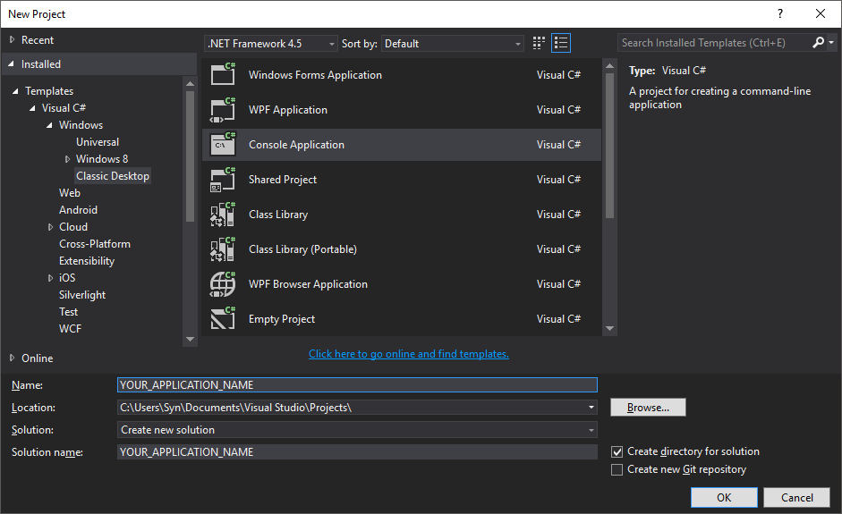

Basic Tutorial
In this tutorial we will create a simple bot that opens an application by taking commands from the user. As Oscova is part of Syn.Bot framework please ensure that you are always using the Syn.Bot.Oscova namespace and not Syn.Bot.Siml.
Creating a Console Application
To create a Console application in Visual Studio following the steps given below.
- Start Visual Studio 2015 or above
- On the File menu, select New and then choose Project...
- In the New Project dialog select Console Application.

- Name the project OscovaConsoleBot and choose OK.
Now we'll add a new class to the project. To do so:
- Right click the project in Solution Explorer
- Select Add and then choose Class...
- Name the class AppDialog
Tip
You may download a sample project relating to this tutorial by clicking here.
Creating a Dialog
To create an Oscova Dialog create a class that is derived from the Dialog class.
In this tutorial our Dialog is designed to assist in opening Apps. Thus we'll use the name AppDialog.
class AppDialog: Dialog
{
}
Note
By convention dialog class names should end with the word Dialog.
Creating an Intent
In Oscova an Intent is declared by creating a void method and then decorating the method with Expression and Entity attributes. Our first intent will assist in opening applications. All intent methods must have public modifier and must be of type void.
In the AppDialog class add the following method.
OpenApp (Intent)
[Expression("open {calc}")]
[Entity("app")]
public void OpenApp(Context context, Result result)
{
var appEntity = result.Entities.OfType("app");
Process.Start(appEntity.Value);
}
In the above intent we created an example intent. By annotating the word calc and adding an Entity attribute below the expression we've specified that calc is of the entity type App. The result.Entities property contains all the global and parametric entities parsed by known entity recognizers.
Note
All Oscova attributes are available under the namespace Syn.Bot.Oscova.Attributes
Your entire dialog class should look similar to the following.
using System.Diagnostics;
using Syn.Bot.Oscova;
using Syn.Bot.Oscova.Attributes;
namespace OscovaConsoleBot
{
class AppDialog : Dialog
{
[Expression("open {calc}")]
[Entity("app")]
public void OpenApp(Context context, Result result)
{
var appEntity = result.Entities.OfType("app");
Process.Start(appEntity.Value);
}
}
}
Adding Dialogs and Training
Once all the created dialogs are added to Oscova, it is required that the Bot is trained. Click on Program.cs in Solution Explorer and add the following code within the static Main method.
var bot = new OscovaBot();
bot.Dialogs.Add(new AppDialog());
bot.Train();
Note
Oscova Bot must be trained after new Dialogs or Entity Recognizers are added.
Evaluating a Request
Now that we've added the AppDialog and trained the Bot we can send chat requests to the Bot for evaluation. Add the following just after the above.
while (true)
{
var request = Console.ReadLine();
var evaluationResult = bot.Evaluate(request);
evaluationResult.Invoke();
}
The Bot.Evaluate method takes Request as parameter. In the above code as we've passed a string value, Oscova will evaluate the message under the MainUser context.
After the evaluation is completed, Oscova returns an evaluation result consisting of all the high scoring Intents along with recognized Entities and the conversation Context. All intents are ordered by descending intent scores.
In the above code we call evaluationResult.Invoke method after evaluating the use message. This method invokes the best Contextual Intent. It is important to note that for Oscova the best contextual intent is not always the highest scoring intent. This is because Oscova considers the context of conversation when searching for the best intent.
Running the Bot
Your overall code in Program.cs should look the following.
using System;
using Syn.Bot.Oscova;
namespace OscovaConsoleBot
{
class Program
{
static void Main(string[] args)
{
var bot = new OscovaBot();
bot.Dialogs.Add(new AppDialog());
bot.Train();
while (true)
{
var request = Console.ReadLine();
var evaluationResult = bot.Evaluate(request);
evaluationResult.Invoke();
}
}
}
}
To run the Console bot application press F5. Type open calc. The bot will now launch the Calculator app in Windows.
Congrats! You've successfully created your first Oscova bot.